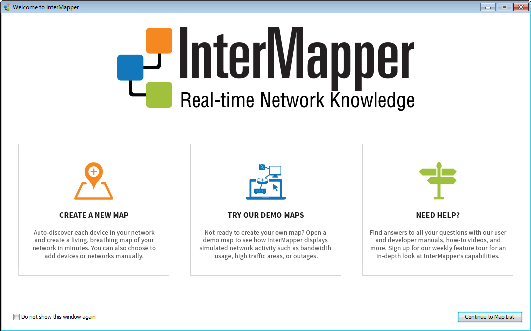
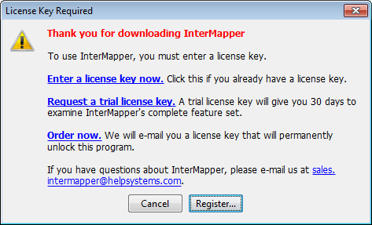

When you install InterMapper, the installer also includes InterMapper DataCenter
When you launch InterMapper the first time, a Welcome page appears. Use the shortcuts on the Welcome page to get you quickly to area of InterMapper that will best get you started.

InterMapper Welcome page
To prevent the Welcome window from appearing:
|
|
Note: although many of the features described in this manual are similar between the MacOS, Windows, and Unix/Linux platforms, there are a few differences. We recommend you read the Readme file installed with your version.

If you already have a license key (because you purchased the software
or you received a trial key), click Enter a license key now or the Register button in the License Key Required window. You can then
enter your name and serial number. For details about entering your evaluation
(or any other) serial number, you can read the Registering
your software
If you don't have a license key, click the Request a trial license key link
in the window shown above. A form appears, allowing you to enter some information, and request a trial license key. When you click Send Request, a license key appears in the text box. It allows you to use InterMapper
to monitor a limited number of devices for
Once you've seen the demo, see Using
InterMapper
When you purchase InterMapper, we will send you a license key that unlocks the software permanently. The license key is associated with a specific piece of hardware, so it will allow InterMapper to run only on a particular machine.
A full license - sent to those who purchase the software - never times out. Once registered, the application will run forever on that machine. If you want to run InterMapper on a different machine, you will need to request a new license key for that machine.
InterMapper also supports trial license keys, which allow you to run InterMapper for a certain number of days before it requires a new key. This gives you an opportunity to try the program without obligation. When a license key expires, InterMapper simply ceases to operate. It never deletes or alters files on your hard drive.